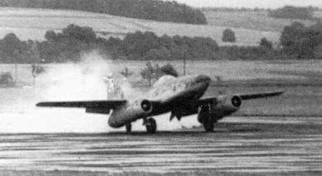
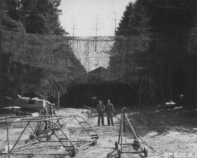
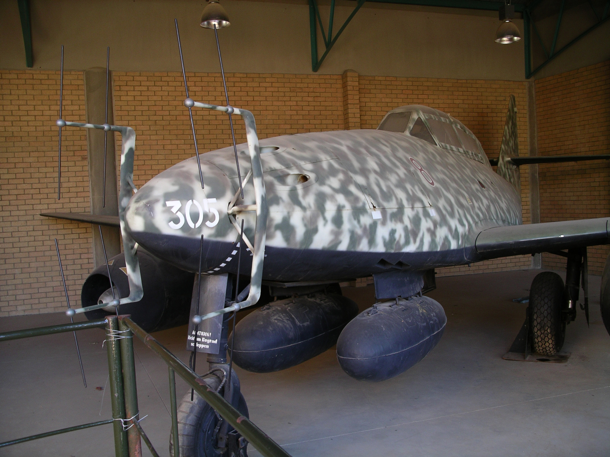
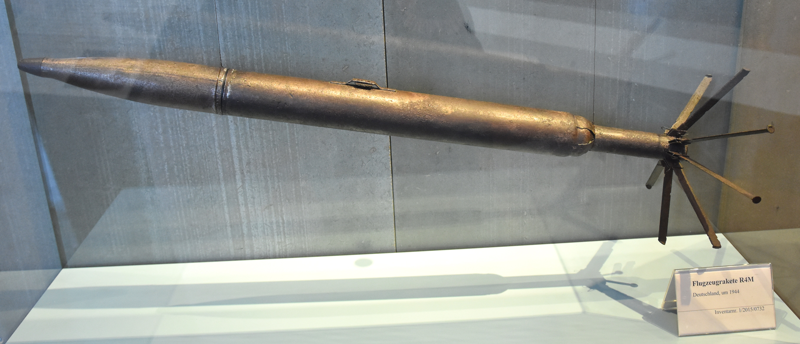

Die Entwicklung der Me262
Die Geschichte der Me 262 beginnt bereits vor dem Zweiten Weltkrieg mit der Entwicklung von Strahltriebwerken in Deutschland. Die Firma Heinkel leistete unter der Leitung des Physikers und Aerodynamikers Hans Joachim Papst von Ohain Pionierarbeit auf diesem Gebiet. Das Reichsluftfahrtministerium (RLM) förderte parallel dazu die Entwicklung bei verschiedenen Motorenherstellern wie Junkers und BMW, um eine breite Auswahl an Konzepten zu erhalten. Nach monatelanger Prüfung entschied man sich zugunsten der Axialturbine mit mehrstufigem Verdichter.
Im Herbst 1938 beauftragte das RLM die Messerschmitt AG mit der Entwicklung eines strahlgetriebenen Jagdflugzeugs. Unter der Projektbezeichnung P.1065 und der Leitung von Dipl.-Ing. Woldemar Voigt entstand bis Ende 1939 zunächst eine Holzattrappe, die von RLM-Mitarbeitern positiv bewertet wurde. Dies führte im März 1940 zum Auftrag für den Bau von drei Prototypen.
Der erste Prototyp (Me 262 V1, Kennung PC+UA) wurde im April 1941 fertiggestellt. Da die vorgesehenen BMW P-3302-Strahltriebwerke noch nicht verfügbar waren, erfolgte der Erstflug am 18. April 1941 mit einem konventionellen Junkers Jumo 210G Kolbenmotor. Der erfahrene Testpilot Fritz Wendel, der durch seinen Geschwindigkeitsweltrekord mit der Me 209 bekannt wurde, erreichte dabei 420 km/h. Ein erster Versuch mit Strahltriebwerken am 25. März 1942 endete beinahe in einer Katastrophe, als beide BMW P 3302-Triebwerke wegen Verdichterschaufelproblemen ausfielen.
Mit der Me 262 V3 (PC+UC) gelang am 18. Juli 1942 der Durchbruch: Fritz Wendel führte den ersten erfolgreichen Flug ausschließlich mit Strahltriebwerken durch, wobei zwei Jumo 004-Versuchsaggregate zum Einsatz kamen. Dieser Flug offenbarte allerdings die problematischen Starteigenschaften mit dem Spornradfahrwerk. Die V5 (PC+UE) markierte mit der Einführung des Bugradfahrwerks einen Meilenstein, der diese Startprobleme löste.

Der erste Flug einer von Strahltriebwerken angetriebenen Me262. Bei der Me262 V3 blieb in den Strahlrohren unverbrannter Treibstoff über, der auf die Landebahn ausläuft und den Rauch verursacht.⁹
Am 15. Mai 1943, flog General der Jagdflieger Adolf Galland die V4. Seine Begeisterung war so groß, dass er äußerte, eine Me 262 sei ihm lieber als fünf Me Bf 109. Die weiteren Prototypen V6 bis V10 dienten der Erprobung verschiedener Systeme und Bewaffnungskonfigurationen, wobei besonders die V6 später Hitlers Entscheidung beeinflusste, die Me 262 als "Blitzbomber" einzusetzen.
Mit zunehmender alliierter Luftüberlegenheit wurde die Produktion dezentralisiert. Die Entwicklung wurde von Augsburg nach Oberammergau verlagert, unterirdische Produktionsstätten wurden eingerichtet und die Fertigung wurde auf kleinere Betriebe im ländlichen Raum verteilt. In diesen Betrieben wurden vor allem Zwangarbeiter eingesetzt. In speziellen KZ-Außenlagern, wie im Autobahntunnel Leonberg, wurden unter unmenschlichen Bedingungen Komponenten gefertigt. Die Häftlinge litten unter extremer Mangelernährung, die zu zahlreichen Todesfällen führte. Medizinische Versorgung war praktisch nicht vorhanden und die Arbeitszeiten betrugen oft 12 Stunden oder mehr, sieben Tage die Woche, ohne Rücksicht auf die körperliche Verfassung der Zwangsarbeiter. Physische Gewalt durch Wachpersonal und Vorarbeiter war alltäglich. Es wird geschätzt, dass insgesamt mehr als 30.000 Zwangsarbeiter und KZ-Häftlinge an der Produktion der Me262 und ihrer Komponenten beteiligt waren. Die Todesrate unter diesen Arbeitern war erschreckend hoch – in einigen Anlagen starben bis zu 40% der eingesetzten Häftlinge.
Die Rüstungsindustrie griff in allen Produktionsbereichen auf KZ-Häftlinge zurück:
- In der Stahlproduktion für Rumpf und Tragflächen.
- In den unterirdischen Produktionsanlagen.
- Bei der Herstellung von Komponenten für die Strahltriebwerke.
Die Serienproduktion begann erst spät im Krieg. Mit dem Beginn der Vorserienfertigung im Januar 1944 (22 Maschinen, S-1 bis S-22) wurden 1944 insgesamt 513 Maschinen an die Luftwaffe ausgeliefert. Erst Anfang 1945 erreichte man "akzeptable" Produktionsmengen, wobei die Qualität meistens zu wünschen übrig ließ.
Produktionsprobleme und Ressourcenknappheit
Die Produktion der Messerschmitt Me262 war ein technisches und logistisches Unterfangen, das unter den schwierigen Bedingungen des Zweiten Weltkriegs an seine Grenzen stieß. Die deutsche Rüstungsindustrie konnte die notwendige Produktionskapazität nicht aufrechterhalten, um die Me262 in ausreichender Zahl und Qualität bereitzustellen. Dies war ein entscheidender Faktor, der die potenzielle Wirksamkeit dieses Flugzeugs erheblich einschränkte.
Eingeschränkte Produktionskapazität
Produktionszahlen und Einsatzbereitschaft
Zwischen 1943 und 1945 wurden insgesamt 1.443 Me262-Flugzeuge produziert, ein bemerkenswerter Erfolg angesichts der technologischen Komplexität und der Kriegsbedingungen. Dennoch waren zu keinem Zeitpunkt mehr als 200 Maschinen gleichzeitig einsatzbereit. Diese Diskrepanz ist ein Spiegelbild der erheblichen Produktionsprobleme, die von Anfang an die Einführung der Me262 begleiteten.
Die geringe Einsatzbereitschaft resultierte aus mehreren Faktoren. Zum einen erwies sich die Montage der Flugzeuge als ressourcenintensiv und fehleranfällig. Die komplexen Jumo 004-Turbojets, die das Herzstück der Me262 bildeten, erforderten hochpräzise Fertigungsmethoden und sorgfältige Qualitätskontrollen, die unter den Bedingungen des kriegsbedingten Materialmangels kaum gewährleistet werden konnten. Außerdem waren unter den Zwangsarbeitern längst nich alle Experten und einige unternahmen bewusste Sabotageaktionen. Zum anderen litt die Logistik unter erheblichen Engpässen, die durch alliierte Bombardierungen weiter verschärft wurden.
Auswirkungen alliierter Bombardierungen
Die alliierten Luftstreitkräfte erkannten frühzeitig die Bedeutsamkeit der Me262 und zielten darauf ab, ihre Produktion zu behindern. Insbesondere die Bombardierung der sogenannten „Waldwerke“, in denen die Flugzeuge montiert wurden, führte zu erheblichen Verzögerungen und Verlusten. Diese unterirdischen Produktionsstätten, die ursprünglich Schutz vor Luftangriffen bieten sollten, waren oft schlecht ausgestattet und konnten die industrielle Kapazität nicht aufrechterhalten.

Ein getarntes Waldwerk der Nationalsozialisten¹⁰
Darüber hinaus erschwerten die Angriffe auf Transportinfrastrukturen wie Bahnhöfe und Schienennetze die Verlagerung von Komponenten und fertigen Flugzeugen. Viele Me262 blieben ungenutzt auf Zügen oder improvisierten Flugplätzen stehen, da sie nicht rechtzeitig an die Front transportiert werden konnten. Diese systematischen Störungen durch die Alliierten machten es nahezu unmöglich, die Luftwaffe konsistent mit einsatzfähigen Maschinen zu versorgen.
Rohstoffknappheit und ihre Folgen
Die eingeschränkte Verfügbarkeit von hochwertigen Materialien, insbesondere hitzebeständigen Metallen wie Nickel und Chrom, war ein weiteres Problem. Diese Metalle waren entscheidend für die Konstruktion der Jumo 004-Turbojets, da sie die hohen Temperaturen in den Brennkammern aushalten mussten. Der Mangel dieser Ressourcen zwang die Ingenieure dazu, minderwertige Alternativen zu verwenden, was die Zuverlässigkeit und Lebensdauer der Triebwerke drastisch senkte.
Die Rohstoffknappheit führte nicht nur zu technischen Kompromissen, sondern hatte auch direkte Auswirkungen auf die Produktionsrate. Die deutsche Rüstungsindustrie konnte die benötigten Materialien nicht in ausreichender Menge beschaffen, was ebenfalls die Fertigung neuer Flugzeuge verlangsamte. Die Situation verschärfte sich, da die Alliierten weiterhin gezielt Produktionsstätte und Rohstofflager angriffen, wodurch die Versorgungskette unterbrochen wurde.
Logistische Herausforderungen
Transportprobleme durch alliierte Angriffe
Das deutsche Schienennetz war das Rückgrat der militärischen Logistik, vorallem in der Phase des Krieges, in der die Infrastruktur durch alliierte Bombardements bereits erheblich geschwächt war. Die Produktion der Me262 erfolgte in verschiedenen, oft weit voneinander entfernten Fabriken und Endmontageeinrichtungen. Diese Flugzeuge mussten anschließend per Zug oder Lastwagen zu den Fronten transportiert werden, da die Fertigungskapazitäten in unmittelbarer Nähe der Einsatzorte nicht vorhanden waren.
Allerding wurden eben diese wichtigen Bahnknotenpunkte und Eisenbahnlinien systematisch zerstört, was den Transport von Flugzeugen und Ersatzteilen erheblich verzögerte oder vollständig verhinderte. Der Ausfall des Schienennetzes führte außerdem dazu, dass improvisierte Methoden wie der Transport über Autobahnen genutzt werden mussten, diese waren aber noch anfälliger für Angriffe.
Um den Bogen jetzt aber wieder zur Einsatzfähigkeit zu bringen: Selbst wenn die Flugzeuge rechtzeitig an die Front geliefert wurden, mangelte es oft durch die aufgezählten Herausforderungen an Ersatzteilen, um sie langfristig einsatzbereit zu halten. Der Zeitdruck, unter dem die Transporte durchgeführt wurden, führte zudem dazu, dass Wartungs- und Montagearbeiten unzuverlässig durchgeführt wurden, was die Zuverlässigkeit der Maschinen beeinträchtigte.
Rollen und Varianten
Die Messerschmitt Me262 wurde nicht nur als Abfangjäger eingesetzt. Ihre vielseitigen Einsatzrollen und die Entwicklung zahlreicher Varianten zeigen, wie das Flugzeug an unterschiedliche militärische Anforderungen angepasst wurde – oft mit gemischtem Erfolg.
Vielfältige Einsatzrollen
Die Me262 wurde für eine Vielzahl von Aufgaben konzipiert und eingesetzt, darunter als Nachtjäger, Aufklärer und Jagdbomber. Hieraus wird ersichtlich, wie wichtig maximale Effizienz für die deutsche Kriegsführung mit zunehmender Ressourcenknappheit wurde. Man versuchte aus einer begrenzten Anzahl an Flugzeugen vielseitige Varianten zu entwickeln.
Nachtjäger
Angesichts der zunehmenden nächtlichen Bombardements durch die britische Royal Air Force wurde die Me262 als Nachtjäger modifiziert. Die Me262B-1a/U1, eine zweisitzige Variante, war mit dem FuG-218-Neptun-Radar und Hirschgeweih-Antennen ausgestattet, um feindliche Bomber bei Nacht zu lokalisieren und abzufangen. Diese Anpassungen waren führten jedoch zu einer Reduzierung der Höchstgeschwindigkeit um etwa 60 km/h aufgrund des erhöhten Luftwiderstands. Trotz vereinzelter Erfolge blieb der Einsatz dieser Nachtjäger begrenzt, da nur wenige Einheiten wie das Kommando Welter mit dieser Variante ausgestattet wurden.

Das Radargerät FuG 218 Neptun an einer Me 262¹¹
Aufklärer
Die Me262A-1a/U3 wurde als Aufklärervariante entwickelt, um die deutsche Luftwaffe mit wichtigen Informationen über feindliche Truppenbewegungen und Stellungen zu versorgen. Die Bewaffnung wurde reduziert oder vollständig entfernt, um Platz für Kameras wie die RB-20/30 oder RB-75/30 zu schaffen. Diese Variante erwies sich als nützlich, konnte jedoch aufgrund der geringen Produktionszahlen nur eingeschränkt eingesetzt werden. Der begrenzte Aktionsradius und die feindliche Luftüberlegenheit machten die Aufklärungsmissionen zudem riskant.
Jagdbomber
Die Umrüstung der Me262 zum Jagdbomber unter dem Namen „Sturmvogel“ (Me262A-2a) wurde vor allem auf Drängen Hitlers durchgeführt. Diese Variante konnte bis zu 1.000 kg Bombenlast tragen, war jedoch durch die zusätzliche Belastung und den daraus resultierenden Stabilitätsproblemen eingeschränkt. Der hohe Schwerpunkt führte zu Schwierigkeiten bei Start und Landung, während die Bombenlast die Manövrierfähigkeit erheblich reduzierte. Die Sturmvogel-Variante konnte die strategischen Vorhaben der deutschen Führung nicht umsetzen und blieb hinter den Erwartungen zurück.
Spezialversionen und experimentelle Varianten
Neben den standardisierten Modellen wurden mehrere Spezialversionen und experimentelle Varianten entwickelt, die die Flexibilität der Me262 weiter erhöhen sollten.
Raketenbewaffnung
Die Einführung der R4M-Luft-Luft-Raketen war ein Meilenstein in der Bewaffnung der Me262. Diese Raketen konnten präzise durch das standardisierte Revi-16B-Visier abgefeuert werden und waren besonders effektiv gegen Bomberformationen. Ihre geringe Größe ermöglichte die Mitführung von bis zu 24 Raketen, die verheerenden Schaden anrichten konnten. Am 18. März 1945 zeigte sich ihr Potenzial, als 12 Bomber und 2 Begleitjäger in einem einzigen Einsatz zerstört wurden.

Eine R4M Rakete im Technikmuseum Berlin¹²
„Heimatschützer“-Reihe
Die experimentelle „Heimatschützer“-Reihe war darauf ausgelegt, die Steigleistung und Geschwindigkeit der Me262 durch den Einsatz von Raketentriebwerken zu erhöhen. Die Me262C-1a („Heimatschützer I“) war mit einem Walter R II-211/3-Raketenmotor ausgestattet, der eine enorme Beschleunigung ermöglichte. In Tests erreichte das Flugzeug 7.620 Meter Höhe in nur viereinhalb Minuten. Doch die Korrosion durch den Raketentreibstoff und die Unzuverlässigkeit der Motoren führten dazu, dass diese Varianten nicht über das Prototypenstadium hinausgingen.
Weitere experimentelle Modelle
Andere Varianten wie die Me262 HG-Serie („Hochgeschwindigkeit“) zeigten ambitionierte Ansätze, die Aerodynamik und Geschwindigkeit des Flugzeugs zu optimieren. Diese Modelle gingen jedoch aufgrund von Produktionsengpässen und der fortschreitenden Kriegsniederlage Deutschlands nie über das Stadium der theoretischen Grundlagen hinaus.
Fazit
Die zahlreichen Rollen und Varianten der Me262 zeigen die Bemühungen der deutschen Luftwaffe, die Fähigkeiten dieses revolutionären Flugzeugs maximal auszuschöpfen. Doch auch die Grenzen dieser Anpassungen wurden immer deutlicher. Viele der Modifikationen, wie die Nachtjäger- und Jagdbomber-Varianten, wurden in einer hastigen und oft ineffizienten Weise durchgeführt, was ihre Wirksamkeit beeinträchtigte. Experimentelle Modelle wie die „Heimatschützer“-Reihe oder die HG-Serie waren technologische Vorreiter, kamen jedoch zu spät, um den Kriegsverlauf noch beeinflussen zu können.